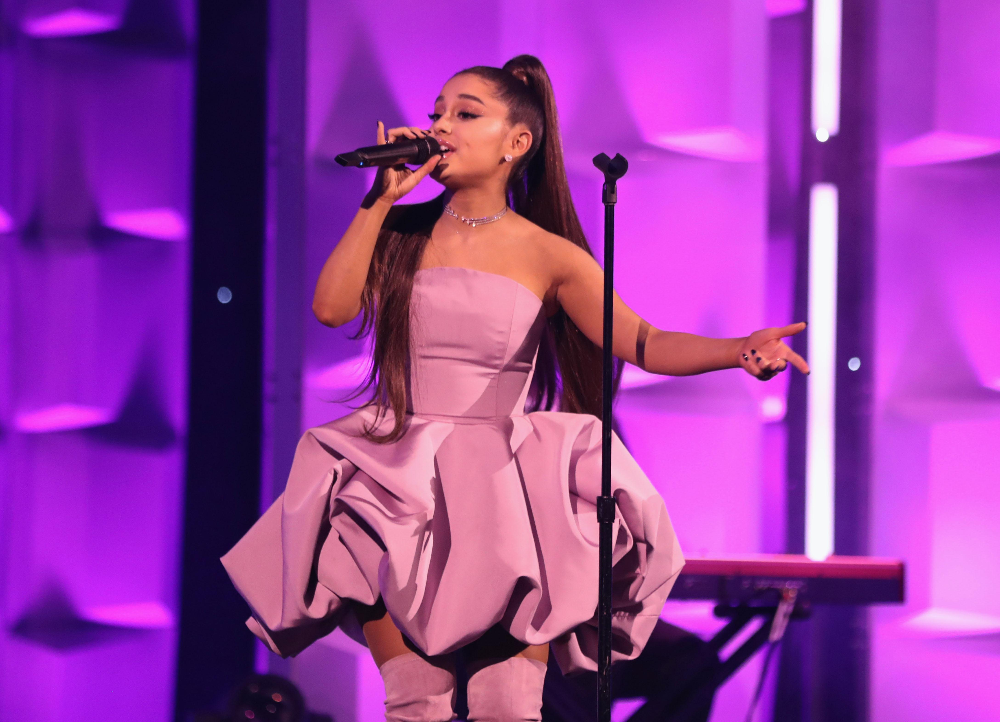
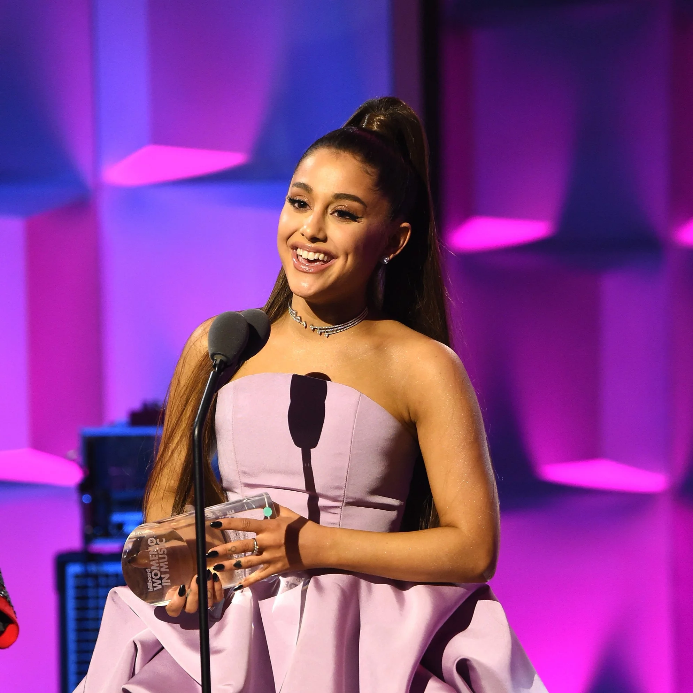

HER BACKGROUND
Ariana Grande, born on June 26, 1993, in Boca Raton, Florida, is a prominent American singer, songwriter, and actress known for her remarkable vocal talent and significant influence on contemporary pop music. She began her career as a child actress, making her debut in the Broadway musical 13 before gaining fame on Nickelodeon's Victorious (2010-2013) as Cat Valentine. Her success on the show led to the spinoff series Sam & Cat (2013-2014), further establishing her presence in the entertainment industry. However, Grande's true passion for music emerged as she transitioned from acting to pursuing a career as a singer.
In 2013, Ariana Grande released her debut album Yours Truly, which debuted at number one on the Billboard 200 chart and featured the hit single "The Way." This initial success set the stage for her subsequent albums, including My Everything (2014), which produced chart-topping singles like "Problem" and "Break Free." Grande's unique blend of pop and R&B, combined with her impressive vocal range, quickly garnered her acclaim and established her as a rising star in the music industry. Her third album, Dangerous Woman (2016), marked a more mature phase in her career, showcasing her versatility and solidifying her reputation as a leading pop artist.
Ariana Grande's career faced a significant challenge in 2017 when a terrorist attack occurred at her concert in Manchester, England, resulting in tragic loss of life. Despite this traumatic experience, Grande demonstrated resilience and strength by organizing the "One Love Manchester" benefit concert to support the victims and their families. This event, featuring numerous artists, became a symbol of unity and solidarity in the face of adversity. Following this, Grande continued to achieve musical success with albums like Sweetener (2018) and Thank U, Next (2019), both of which were critically acclaimed and commercially successful. Thank U, Next featured hits such as "Thank U, Next" and "7 Rings," highlighting her ability to turn personal experiences into powerful, relatable music.

Achievements
-
Ariana Grande has achieved remarkable success throughout her career, becoming one
of the most influential pop stars of her generation. Her debut album, Yours Truly
(2013), set the stage for her career with its chart-topping success, followed by the
critically acclaimed My Everything (2014) and Dangerous Woman (2016). She further
solidified her place in the music industry with Sweetener (2018), which won the Grammy
Award for Best Pop Vocal Album, and Thank U, Next (2019), which broke records for
streaming and featured hits like "Thank U, Next" and "7 Rings." Her 2020 album,
Positions, debuted at number one on the Billboard 200. Grande has won multiple awards,
including four Grammys, 19 Billboard Music Awards, and six American Music Awards. Beyond
her musical accomplishments, she has made a significant cultural impact with her
distinctive style and philanthropic efforts, including organizing the "One Love
Manchester" benefit concert after the 2017 bombing and advocating for mental health
and social justice. Her combination of vocal talent, record-breaking achievements, and
dedication to positive change has firmly established her as a leading figure in
contemporary music and popular culture.
 Facebook
Youtube
Facebook
Youtube